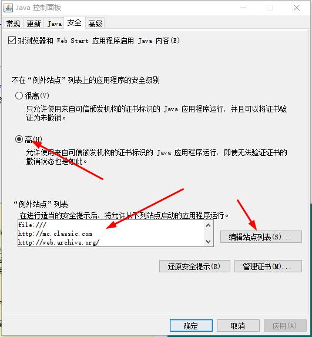
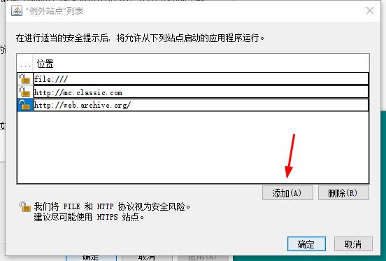

运行旧版Java的JNLP教程（本教程只测试了win10未测试win7
这不需要浏览器运行，可以将Applet和带有Main class的Java程序窗口化
1.去官网下载Java8（这不需要限制，32位和64位都可以 ，前提是必须按照Update 261以上的版本）
2.按win+r键输入javacpl（如果提示找不到该文件，是Java环境变量没有设置正确）打开Java控制面板，点击安全选项卡，找到例外站点列表，然后点击编辑站点列表，将file:///设为例外站点（点击添加），如果你是用本网站的JNLP，请将本网站设为例外站点，再把安全等级设为高就行了

3.接下来双击JNLP文件就启动了（如果提示无法打开，或者是打开方式可能是Java环境变量没有设置正确）
Tips: 如果是新版的JNLP也被阻止运行，请参照此教程